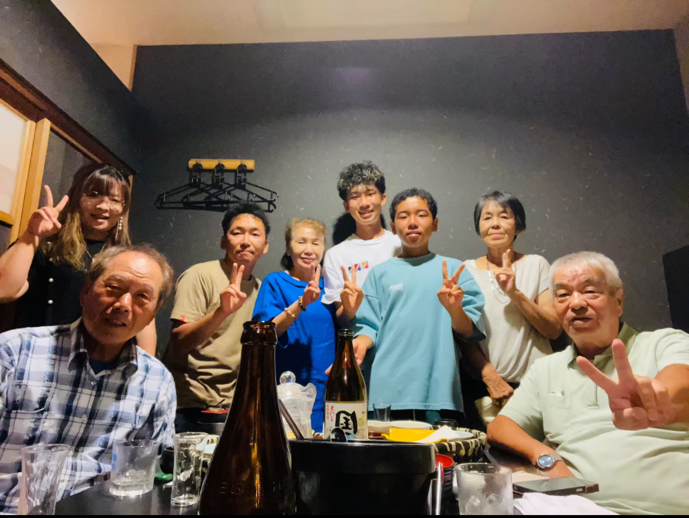

創業の思い
自分史制作が、家族の架け橋になれたら。
経験としても、形としても——一生の思い出に。

きっかけ
もっと、おじいちゃんのことを知りたかった。
半年ぶりに地元・鹿児島へ帰省し、両家のおじいちゃん、おばあちゃんと食事をしたとき、 おじいちゃんが脳梗塞で倒れたという話を聞きました。
「亡くなってからじゃ遅い」——そのとき、何かおじいちゃんのためにしたいと思いました。
知りたかったこと
おじいちゃん、おばあちゃんのことを知りたい。お父さん、お母さんのことも。 でも、照れて聞けないこともたくさんある。
おじいちゃんは、きっと孫の自分にいろんなことを伝えたいと思っているはず。 理解してほしいと思っているはず。
一方で、おじいちゃんにとっても、時間があるからこそ人生を振り返れることは、 きっと喜ばれることだと思う。
おばあちゃんの小さい頃の話、自分と同じくらいの年代の話を聞けた自分は、幸せ者でした。
架け橋ブックという名前
「架け橋ブック」という屋号にしたのは、このサービスがつなぐものがたくさんあるからです。「ブック」には、雑誌の一冊として形に残すという意味も込めています。
世代と世代のあいだ。 「知らなかった」と「知っている」のあいだ。 沈黙と、会話のあいだ。 バラバラな記憶と、一冊の形のあいだ。
完成した雑誌は、家族の架け橋になります。
家族プロジェクトとして
本を作ることがゴールではありません。
家族で一緒に進めるプロジェクト——それが架け橋ブックの中心にあります。 写真を集める。取材の日を迎える。初稿を家族で読む。完成した一冊を見返す。
旅に出るように、みんなで一つの目的に向かう体験は、 仕事でも人生でも、大きな充実感をくれると私は思っています。
その過程そのものが、経験として残る。形になった一冊も、一生の思い出になる。
大切にしていること
会話が、残る——本だけじゃない。取材や見返す時間そのものが価値です。
やさしく、聞く
無理に昔話を掘りません。話したい範囲だけで作れます。
いつもの話で、いい
偉い人生じゃなくていい。特別なエピソードは不要です。
家族で、つくる
申込から納品まで、家族で一緒に進められます。

代表メッセージ
年上の方の昔話を聞くのが好きで、聞くことが仕事になる—— そんな自分にとって、架け橋ブックは天職だと感じています。
「そんな大それたものは作れない」と遠慮される方にも、 いつもの話から始められることを伝えたい。
まずはお気軽に、無料相談でお話しください。
架け橋ブック 山元 来輝